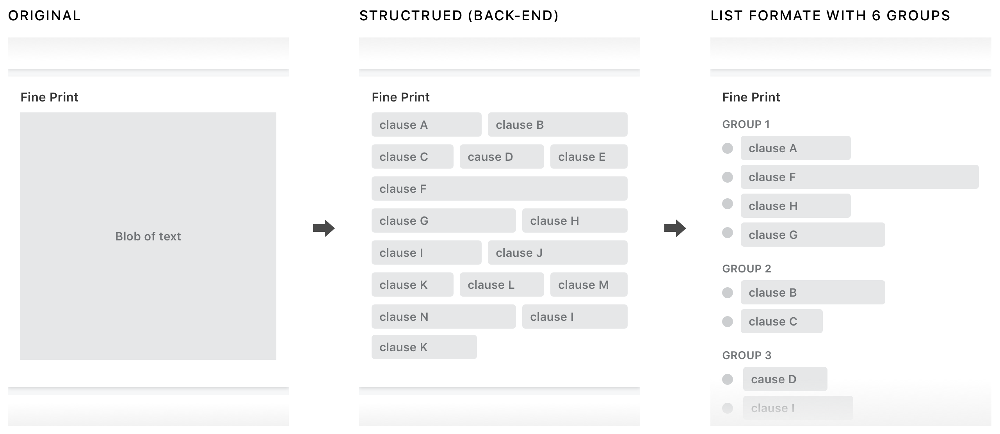
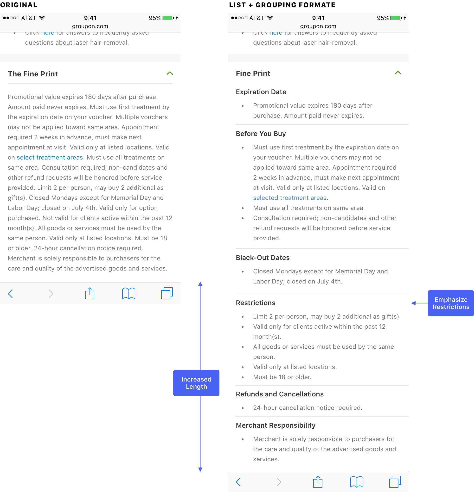
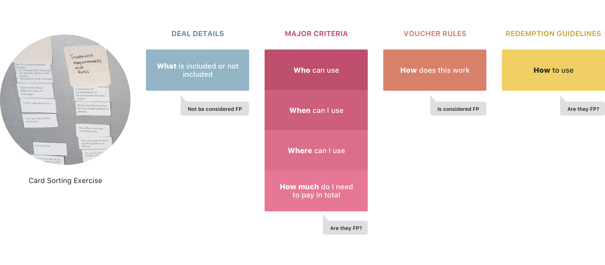
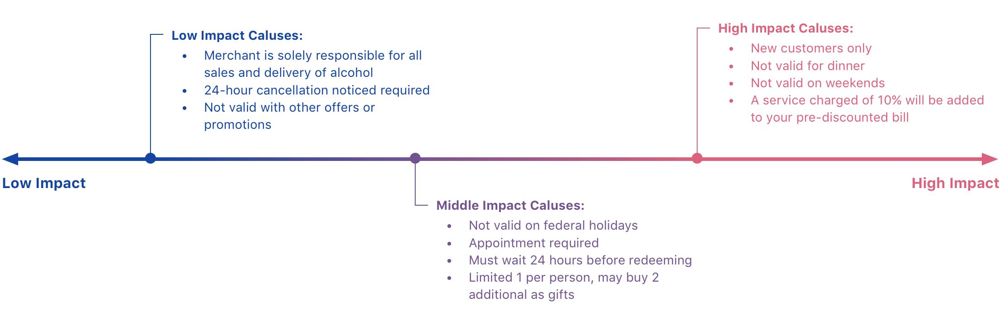
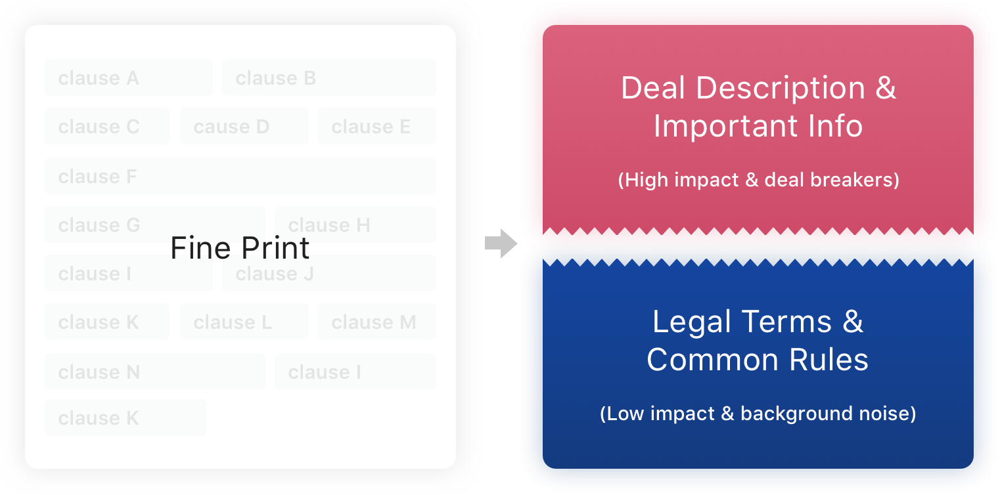
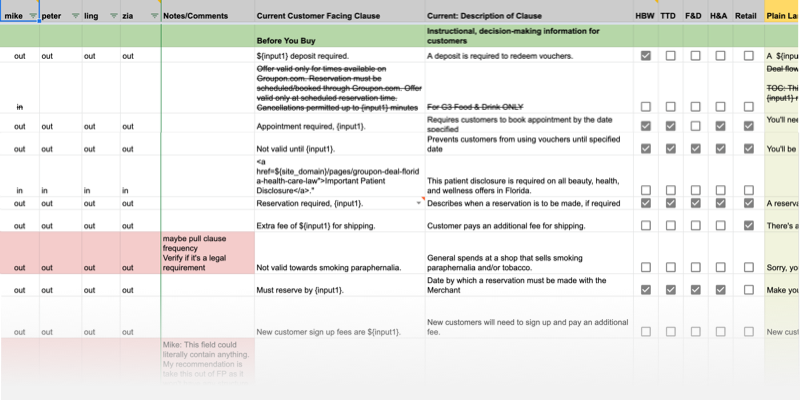
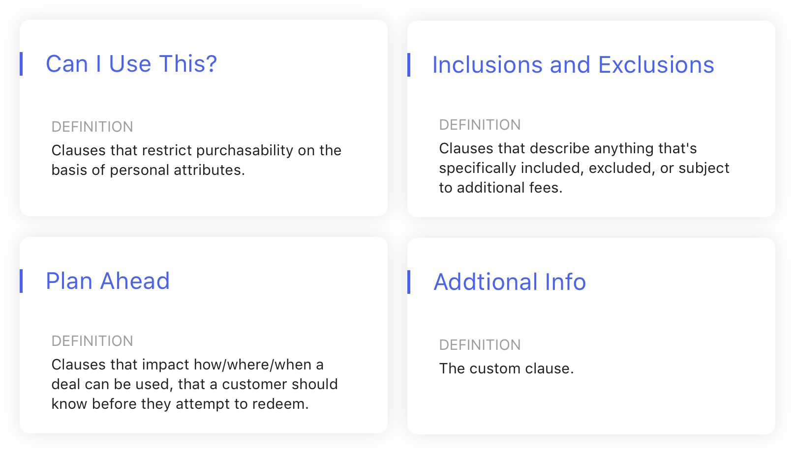
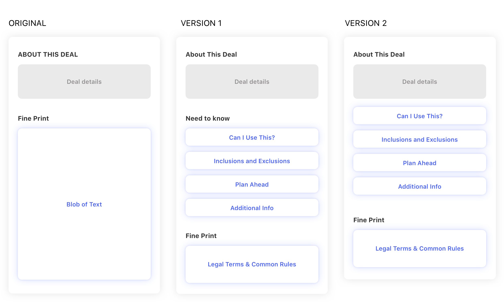
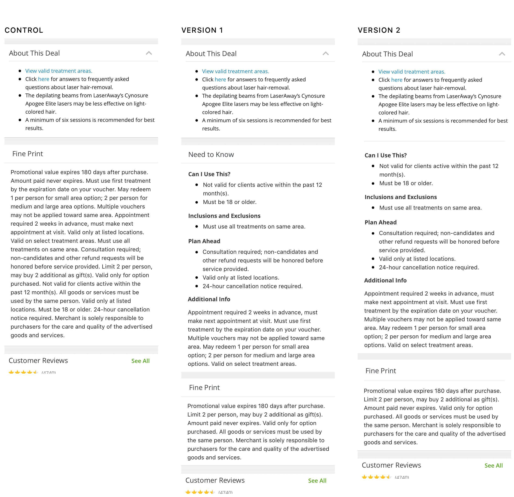

Content structure is the key of this project. From the user perspective, Fine Print should be as clear as possible to avoid future redemption problems. On the other hand, when Fine Print is "too clear", users feel the deal is restrictive, that hurts the conversation. Therefore, I was focused on finding the right balance between user and business needs by restructured the Fine Print content.
I teamed up with a PM, a UX researcher, and a content strategist. At the early stage, I worked with the UX researcher to conduct a series of user studies to understand the problem from different perspectives (users, sales reps, merchants). Meanwhile, I worked with the content strategist and PM to analyze Fine Print data. Thereafter, I proposed two design recommendations and went through a user testing to determine the final design.
“The fine print get’s you. I bought this Groupon for a yoga class, but it turns out with the restrictions I can’t use it. That’s very frustrating.”
Like Maria’s story, there are so many unsatisfied Groupon experiences related to Fine Print. In fact, unclear Fine Print is one of the biggest reasons users contact customer support. Users ask for a refund because they overlooked important information in the Fine Print. If the refund can not be issued, they more likely won’t come back to Groupon again. Also, they could leave a bad review on the app store. Therefore, this problem could hurt not only the business but the trust of the brand for the long run.
Before I joined the project, here was where we were. Since the goal was to make Fine Print easy to read and digest, the first attempt was to display Fine Print in a list format instead of a block of text. In order to gain this ability, the team started to transform Fine Print clauses to modules from the back-end. After the back-end was ready, the team ran an experiment of this new format of Fine Print.

Unfortunately, the experiment failed. The list format did slightly reduce refund rates, but also dropped the conversation badly. The Orders/UV decreased between -1.2%~-1.6% across all platforms, so the experiment was terminated after 2 weeks. However, unclear Fine Print was still one of the biggest user pain points, and we want to address it. Here was where I started from.

To answer those questions, I wanted to take a step back to understand what the Fine Print and each clause means to the user. Does current groups and information hierarchy make sense to users? If we don’t tell the users those are Fine Print clauses, from pure content perspective, how those pieces of information impact their purchase decision? To find the opportunity, I think we should look at the problem from a different angle, and that’s why we decided to conduct a user study to find the answer.
To understand user’s mental model on individual Fine Print clauses. Observing how will users sort pieces of Fine Print contents when they don’t know where is the content originally from.
We recruited 2 power users, 5 engaged users, 4 new or inactive users, and ask them to sort fine print clauses cards and give each group a name.
In the card sorting exercise, users actually didn’t put many clauses into the Fine Print bucket. That means putting content that’s not be considered as fine print in Fine Print section can cause users to miss important information. After watching 11 people did the card sorting exercise, we found this pattern across most of participants’ mental model.

Another key finding was that not all Fine Print clauses was important to users. Users described some clauses were “deal breakers” and some of them were just “background noise”, and the rest of them were in between. Which showed giving all clauses equal weight made deal overall more restrictive and increased the time to digest them.


From the user study, I learned that not all clauses were considered as “fine print”. Users saw some of them as deal details and important information. The literal “fine print” in user’s mind is the background noise; it is general rules they expected to see on every voucher, such as purchase limitations or usage per visit. Hence, mixing these two types of info into a same Fine Print section was misleading. More importantly, it made the deal feels more restrictive. Therefore, I came up with the idea of pulling out those “non-Fine Print” clauses from the Fine Print section and find a better way to display them.
After understanding the user’s perspective and deciding the direction, it was time to dive in the design solution. I went through the following 3 steps:
In order to decide what contents should be pulled out of Fine Print, I started sorting current Fine Print clauses. From user’s perspective, the “Fine Print” should be less impact on their purchase decision. It is considered a place to show general rules or legal terms, but shouldn’t include big deal breakers. With this definition, content strategist and I broke 150+ clauses to Fine Print and non-Fine Print(important info) two groups. Thereafter, we brought non-Fine Print clauses to the next step.

The goal was to call out important information with less feeling of being restricted. Since the content of the clause couldn’t be changed at that moment, we focused on finding the right grouping and proper name for each group. Also, the data shows there’s a correlation between the number of the groups and conversion. Therefore, we also chose to reduce the number of groups. After a lot of back and forth discussions, we landed on these four groups.

At this point, all components was ready. Next, I need to find out what’s the better structure. I came up with two versions. One was to create a new section called “Need to know”, which had a softer tone, to display non-fine print clause groups. The second option is to merge non-fine print clauses with “About this deal” section, which treated those clauses as part of deal description. In both treatments, I made the remaining fine print clauses as blob of text to reduce its prominence.

In order to pick one version to run A/B experiments, we conducted a quick remote user test to find the answer. At the same time, we also wanted to learn whether the new design makes users feel the deal is less restrictive.
We used usertesting.com to remotely test 32 people. They was asked to compare either version 1 with control or version 2 with control, and rate the restrictive level of each version.

At the end, we picked version 2 to run A/B experiments. On mobile web, the conversion impact was flat compared to -1.66% in the first experiment. It was a positive signal showed that we are towards the right direction. We also tracked Customer Support impact, the order refund went down 0.51% within a month. That proves the new design does prevent users from missing important information. Next step, we plan to improve the custom cluses to solve the repetition issue and rephrase the clauses to plain language to make non-fine print clauses more friendly.